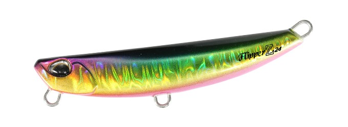
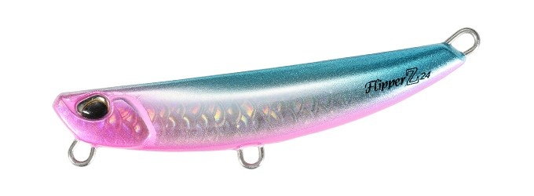
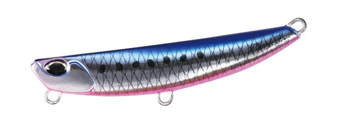
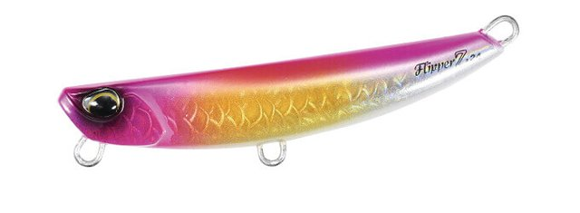
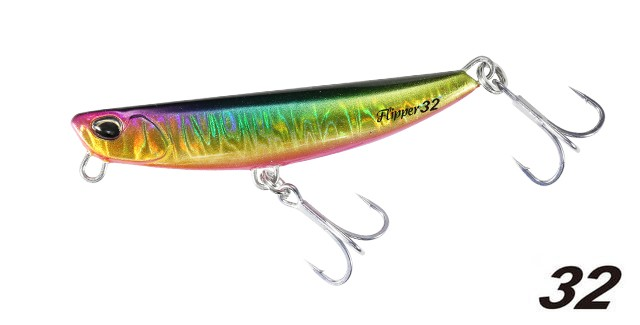

フリッパーZ24
（メタルジグ）
フリッパーZ24（Beach Walker Flipper Z24）はDUO（デュオ）のメタルジグです。
見た目はフリッパー32gと同じでアピール力もそのままに、ボディを亜鉛素材で作って24gに軽量化したモデル。サーフロッドだけでなくシーバスロッドやエギングロッドでも無理なく使え、狙える場所や対象魚がぐんと広がるのが最大の魅力です。

画像出典:DUO公式HP
スペック
- メーカー
- DUO（デュオ）
- タイプ
- メタルジグ（亜鉛）
- 全長
- 68mm
- 自重
- 24g
- レンジ
- フリー
- フック
- フロント#7・リア#6
- リング
- フックアイ#2.5（ラインアイなし）
- ターゲット
- ヒラメ・マゴチ・青物など
- 価格
- 1,650円（税込）
▼今すぐチェック
フリッパーZ24の特徴
フリッパー32gのシルエットとアピール力のまま、亜鉛で24gに軽量化したライトユーザー向けモデル
-
見た目とアピール力はフリッパー32gのまま
見た目はフリッパー32gと同じで、アピール力もそのまま。サーフのヒラメゲームで実績のあるフリッパーの性能を、軽いウエイトで使える。
-
亜鉛素材で24gに軽量化
ボディを亜鉛素材で作成して24gに軽量化。鉛より比重が低いので、同じシルエットでもフォールがゆっくりになり、浅い場所でも扱いやすい。
-
ライトなロッドでも扱える
サーフロッドだけでなく、シーバスロッドやエギングロッドなどでも無理なく使える。入門者を含むライトユーザーに向けたフリッパーだ。
フリッパーZ24の使い方
基本はキャストして着底させ、ただ巻きやリフト＆フォールでボトム付近を探る。亜鉛ボディは同じシルエットの鉛ジグよりゆっくり沈むので、浅いサーフや根の多い場所でもボトムを取りやすい。
レンジはフリーなので、着底後の巻き始めのスピードとロッドの角度で通すレンジを調整します。
フリッパーZ24の得意な状況
水深の浅いサーフや河口で、ヒラメ・マゴチを狙う状況が最大の出番。
専用のサーフロッドを持っていない人が、手持ちのシーバスロッドやエギングロッドでサーフゲームを始めたい時にも選びたい1本です。
ワンポイント
亜鉛は鉛より軽い分、同じ重さでもシルエットが大きくなります。重さではなく見た目のサイズで合わせたい時は、同じシルエットのフリッパー32と比べて選びましょう。
ラインアイがないモデルなので、スナップの付け方は製品の仕様に合わせて確認してください。
ビーチウォーカーフリッパーシリーズの使い分け
| モデル | 全長／自重 | 得意な場面 |
|---|---|---|
| MB22 | 49mm／22g | ブレード付きの最小モデル・食わせ重視・小型ベイトに |
| Z24 | 68mm／24g | 亜鉛ボディで軽量化・シーバスロッドやエギングロッドでも扱える（本記事のモデル） |
| 32 | 70mm／32g | シリーズの基本となるメタルジグ・飛距離と操作性の基準 |
| iTMB33 | 59mm／33g | タングステン封入＋ブレード・コンパクトに強くアピール |
| Z36 | 85mm／36g | 大きめのシルエットで存在感を出したい時に |
| iT38 | 68mm／38g | タングステン封入の高比重モデル・遠投や深場に |
| 40 | 80mm／40g | シリーズ最重量クラス・潮の速い場所や沖のブレイクに |
ビーチウォーカーフリッパーは、ブレード付きのMB22・iTMB33、亜鉛素材のZ24、タングステン封入のiT38など7モデル展開。使うロッドの強さと、狙う距離・水深に合わせてモデルを選ぶのが基本だ。
オススメカラー
フリッパーZ24は全21色展開。オススメのカラーを厳選して紹介します。

GPA0920 ゴールデンベイトGBゴールドベースのベイトカラー。濁りやローライトでも存在感を出せる。

GPA0813 ゴールドピンクヘッドOBゴールドにピンクヘッドのアピール系。朝マズメのサーフに。

PSA0803 ギラマズメイワシギラつくフラッシングのイワシ系。マズメのベイトパターンに。

GYA0732 UVピンクサンライズGBUVとピンクの高アピールカラー。日の出前後の時間帯に。
画像出典:DUO公式HP
フリッパーZ24に似ているルアー
-

フリッパー32 DUO 詳細はこちら＞同じシルエットの鉛製フリッパー。Z24と見た目は同じで32gなので、もっと飛距離や沈みの速さが欲しい時に持ち替えたい。
-
 フリッパーMB22
DUO
詳細はこちら＞
フリッパーMB22
DUO
詳細はこちら＞
ブレード付きの最小フリッパー。22gと重量帯が近く、さらに小さく見せたい時の選択肢になる。
-
 Zブレード
ジーク
詳細はこちら＞
Zブレード
ジーク
詳細はこちら＞
亜鉛合金ボディのブレードジグ。鉛より比重の低い素材でゆっくりフォールさせる考え方が、フリッパーZ24と共通する。